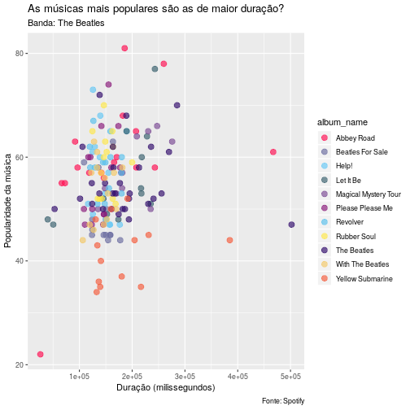

visualizacao de Dados
Introdução
As visualizações gráficas são muito importantes para transmitir informações. Podemos dizer até que ela é fundamental para análise de dados, nos ajudando a responder questões, tomar decisões, contar histórias e até mesmo inspirar. Veremos como fazer criar essas visualizações utilizando dados do Spotify sobre a melhor banda do mundo:
knitr::include_graphics("https://github.com/p4hUSP/workshops_2018.2/blob/master/imgs/w3_01.jpeg")

Isso mesmo, os Beatles! Você pode até se perguntar se tem algum motivo especial para ser essa banda, não é mesmo? A resposta é que eles são demais por isso merecem a nossa atenção.
Vamos ao que interessa! Primeiro nós precisamos habilitar as bibliotecas que utilizaremos hoje:
library(tidyverse)
Quando habilitamos o tidyverse, outros pacotes são habilitados também, entre eles, o readr (para importar os dados), o dplyr (para manipular os dados) e o ggplot2 (para visualizar os dados). O foco desse workshop é utilizar o pacote para visualização chamado ggplot2, mas antes precisamos importar e manipular os dados.
data <- read_csv("https://raw.githubusercontent.com/p4hUSP/workshops_2018.2/master/data/w3/beatles.csv")
## Parsed with column specification:
## cols(
## .default = col_character(),
## is_collaboration = col_logical(),
## album_release_date = col_date(format = ""),
## album_release_year = col_date(format = ""),
## album_popularity = col_integer(),
## track_number = col_integer(),
## disc_number = col_integer(),
## danceability = col_double(),
## energy = col_double(),
## loudness = col_double(),
## speechiness = col_double(),
## acousticness = col_double(),
## instrumentalness = col_double(),
## liveness = col_double(),
## valence = col_double(),
## tempo = col_double(),
## duration_ms = col_double(),
## time_signature = col_integer(),
## track_popularity = col_integer(),
## year = col_integer()
## )
## See spec(...) for full column specifications.
Vamos utilizar a função glimpse() para ver a estrutura do nosso banco de dados
glimpse(data)
## Observations: 169
## Variables: 32
## $ artist_name <chr> "The Beatles", "The Beatles", "The Beat...
## $ artist_uri <chr> "3WrFJ7ztbogyGnTHbHJFl2", "3WrFJ7ztbogy...
## $ album_uri <chr> "0ETFjACtuP2ADo6LFhL6HN", "0ETFjACtuP2A...
## $ album_name <chr> "Abbey Road", "Abbey Road", "Abbey Road...
## $ album_img <chr> "https://i.scdn.co/image/a70b5fec5600e9...
## $ album_type <chr> "album", "album", "album", "album", "al...
## $ is_collaboration <lgl> FALSE, FALSE, FALSE, FALSE, FALSE, FALS...
## $ album_release_date <date> 1969-09-26, 1969-09-26, 1969-09-26, 19...
## $ album_release_year <date> 1969-09-26, 1969-09-26, 1969-09-26, 19...
## $ album_popularity <int> 79, 79, 79, 79, 79, 79, 79, 79, 79, 79,...
## $ track_name <chr> "Come Together - Remastered 2009", "Som...
## $ track_uri <chr> "2EqlS6tkEnglzr7tkKAAYD", "0pNeVovbiZHk...
## $ track_number <int> 1, 2, 3, 4, 5, 6, 7, 8, 9, 10, 11, 12, ...
## $ disc_number <int> 1, 1, 1, 1, 1, 1, 1, 1, 1, 1, 1, 1, 1, ...
## $ danceability <dbl> 0.533, 0.396, 0.764, 0.422, 0.626, 0.37...
## $ energy <dbl> 0.376, 0.338, 0.426, 0.656, 0.512, 0.51...
## $ key <chr> "A", "C", "D", "E", "C#", "D", "A", "D"...
## $ loudness <dbl> -11.913, -10.872, -11.045, -8.412, -9.1...
## $ mode <chr> "minor", "major", "major", "major", "mi...
## $ speechiness <dbl> 0.0393, 0.0304, 0.0405, 0.0397, 0.0247,...
## $ acousticness <dbl> 0.03020, 0.19800, 0.62900, 0.01260, 0.1...
## $ instrumentalness <dbl> 2.48e-01, 2.62e-06, 1.19e-04, 2.79e-02,...
## $ liveness <dbl> 0.0926, 0.1380, 0.1320, 0.2680, 0.2150,...
## $ valence <dbl> 0.187, 0.377, 0.726, 0.549, 0.730, 0.42...
## $ tempo <dbl> 165.007, 133.522, 131.120, 173.930, 92....
## $ duration_ms <dbl> 259947, 182293, 207920, 207240, 170720,...
## $ time_signature <int> 4, 4, 4, 3, 4, 4, 4, 4, 3, 4, 4, 4, 4, ...
## $ key_mode <chr> "A minor", "C major", "D major", "E maj...
## $ track_popularity <int> 78, 68, 58, 65, 60, 61, 81, 59, 58, 56,...
## $ track_preview_url <chr> NA, NA, NA, NA, NA, NA, NA, NA, NA, NA,...
## $ track_open_spotify_url <chr> "https://open.spotify.com/track/2EqlS6t...
## $ year <int> 1969, 1969, 1969, 1969, 1969, 1969, 196...
Perceba que cada observação da nossa base de dados é uma música e que cada uma delas possuem métricas, como por exemplo, “danceability”, “instrumentalness” e entre outros. Para sabermos o que significa cada uma dessas informações podemos acessar este link.
Ao longo da carreira, os Beatles lançaram 13 albuns de estúdio, vamos verificar quantas músicas cada album tem.
count(data, album_name)
## # A tibble: 13 x 2
## album_name n
## <chr> <int>
## 1 A Hard Days Night 1
## 2 Abbey Road 17
## 3 Beatles For Sale 14
## 4 Help! 14
## 5 Let It Be 12
## 6 Magical Mystery Tour 11
## 7 Please Please Me 14
## 8 Revolver 14
## 9 Rubber Soul 14
## 10 Sgt. Peppers Lonely Hearts Club Band (Super Deluxe Edition) 1
## 11 The Beatles 30
## 12 With The Beatles 14
## 13 Yellow Submarine 13
Percebam que dois albuns possuem apenas uma música, o “A Hard Days Night” e o “Sgt. Peppers Lonely Hearts Club Band”. Para praticarmos vamos então filtrar as observações diferentes destes albuns.
# Filtro
data_clean <- filter(data,
album_name != "A Hard Days Night",
album_name != "Sgt. Peppers Lonely Hearts Club Band (Super Deluxe Edition)")
# Count
album_musicas <- count(data_clean, album_name)
album_musicas
## # A tibble: 11 x 2
## album_name n
## <chr> <int>
## 1 Abbey Road 17
## 2 Beatles For Sale 14
## 3 Help! 14
## 4 Let It Be 12
## 5 Magical Mystery Tour 11
## 6 Please Please Me 14
## 7 Revolver 14
## 8 Rubber Soul 14
## 9 The Beatles 30
## 10 With The Beatles 14
## 11 Yellow Submarine 13
Qual é o album com uma maior quantidade de músicas? E o segundo? O terceiro?
Qual é a média de “danceability” para cada album?
temp1 <- group_by(data_clean, album_name)
dance_album <- summarise(temp1, mean_danceability = mean(danceability, na.rm = T))
dance_album
## # A tibble: 11 x 2
## album_name mean_danceability
## <chr> <dbl>
## 1 Abbey Road 0.518
## 2 Beatles For Sale 0.592
## 3 Help! 0.528
## 4 Let It Be 0.520
## 5 Magical Mystery Tour 0.467
## 6 Please Please Me 0.548
## 7 Revolver 0.482
## 8 Rubber Soul 0.588
## 9 The Beatles 0.503
## 10 With The Beatles 0.500
## 11 Yellow Submarine 0.388
Perceba que se trocassemos a visualização das tabelas por gráficos, a resposta para estás perguntas ficariam muito mais fáceis de se responder. Para isso vamos introduzir o ggplot2.
ggplot2
O ggplot2 é um pacote baseado no que se chamou Grammar of Graphics (por isso gg antes do plot2), que nada mais é do que uma estrutura (framework) para realização de gráficos, que nós também chamamos de “plot”. Além disso, o Grammar of Graphics tem o seguinte principio:
Gráficos são construídos com diferentes layers
Mas o que são layers? Layers são elementos (ou componentes) gramáticais utilizados para fazer um plot. Estes componentes são importantes para determinar a representação dos dados. Como o Hadley Wickham apontou em um artigo chamado “A layered grammar of graphics” (2010), a associação destes layers com uma certa grámatica auxilia o usuário em atualizar e contruir gráficos com uma facilidade maior.
Os elementos gramáticais que temos no ggplot2 são:
a. Data - O dado que será plotado, mapeando as variáveis de interesse.
b. Aesthetics - A escala em que o dado será plotado, sinalizando os eixos x e y, cor, tamanho, preenchimento e etc.
c. Geom - Estrutura que será utilizada nos seus dados, como por exemplo, gráfico de dispersão, linha, boxplot e etc.
d. Facets - plotar multiplos grupos
e. Stats - Transformações estatísticas
f. Coordinates System - O espaço no qual o dado sera plotado, como por exemplo, espaço cartesiano, polar e entre outros.
g. Theme - Controle e modificação de aparência de tudo que não diz respeito ao dado utilizado.
h. Scales - Para cada Aesthetics, descreve como a característica visual é convertida em valores, como por exemplo, escala por tamanho, cor e etc.
knitr::include_graphics("https://github.com/p4hUSP/workshops_2018.2/blob/master/imgs/w3_03.png")

Nós não veremos todos aqui, mas caso você tenha interesse em aprofundar o conteúdo desse workshop, o criador do pacote escreveu um livro que você pode dar uma olhada aqui
Ok, vamos colocar a mão na massa e fazer as nossas primeiras visualizações!
Como fazer um gráfico no ggplot2
Como você desenha um gráfico na mão? A primeira coisa que nós precisamos é um papel
ggplot()

Depois, nós precisamos decidir que dados iremos utilizar e quem vai ser o eixo x e o eixo y.
ggplot(dance_album, aes(x = album_name, y = mean_danceability))
Por fim, nós precisamos escolher qual é a melhor forma/estrutura para visualizar os dados. Neste caso seria interessante vermos um gráfico de barras.
ggplot(dance_album, aes(x = album_name, y = mean_danceability)) +
geom_col()
Simples, não? Apesar disso, precisamos entender alguns conceitos que vimos ao montar este gráfico. O primeiro deles é que para ligarmos uma camada com a outra utilizamos o sinal +. Além disso, colocamos os eixos x e y dentro de uma função chamada aes(). Ela é uma função responsável pela propriedade visual dos objetos no gráfico, em outras palavras, ela faz o “mapeamento” das variáveis do nosso banco de dados para que eles possam fazer parte dos elementos visuais do gráfico.
ggplot(dance_album, aes(x = album_name, y = mean_danceability, fill = album_name)) +
geom_col()
Perceba que o fill = album_name afeta o geom que utilizamos de acordo com a variável de interesse, mas veremos adiante que também podemos alterar um geom especificamente.
Vamos ver outros geom_?
geom_point()
Vamos começar com um dos geoms mais comuns para verificar a relação de duas variáveis quantitativas, o geom_point(). Podemos responder a seguinte pergunta: será que as músicas mais populares, são as mais dançantes?
ggplot(data_clean, aes(x = track_popularity, y = danceability)) + geom_point()
O geom_point(), assim como outros “geoms” pode aceitar argumentos, como por exemplo, cor dos pontos, tamanho e forma.
ggplot(data_clean, aes(x = track_popularity, y = danceability)) + geom_point(color = "blue", size = 3, shape = 22)
geom_histogram()
Se quisermos ver a distribuição de uma variável quantitativa, podemos utilizar o geom_histogram()! Qual será a distribuição da variável energy?
ggplot(data_clean, aes(x = energy)) + geom_histogram(bins = 20)
Lembre-se que também podemos colocar outros atribuitos estéticos!
ggplot(data_clean, aes(x = energy)) + geom_histogram(bins = 20, color = "blue", fill = "green")

geom_boxplot() e geom_violin()
Se nós tivermos uma variável quantitativa e qualitativa, podemos utilizar o geom_boxplot e o geom_violin! Qual a distribuição do speechiness por album?
ggplot(data_clean, aes(x = album_name, y = speechiness)) + geom_boxplot(fill = "#444054", color = "#cc3f0c")
ggplot(data_clean, aes(x = album_name, y = speechiness)) + geom_violin(fill = "#8c1c13", alpha = 1/2)
geom_smooth()
Vamos ajustar uma reta de um modelo de regressão linear no gráfico de dispersão que fizemos anteriormente.
ggplot(data_clean, aes(x = track_popularity, y = danceability)) + geom_point() + geom_smooth(method = "lm", se = FALSE)
Pelo que podemos notar, não parece ter uma relação entre popularidade de dançabilidade… Será mesmo? E se nós ajustassemos uma reta para cada album?
ggplot(data_clean, aes(x = track_popularity, y = danceability, color = album_name)) + geom_point() + geom_smooth(method = "lm", se = FALSE)
geom_line()
Se quisermos ver uma série temporal podemos utilizar o geom_line. Como o loudness varia ao longo das datas de lançamento dos albuns?
temp2 <- group_by(data_clean, album_release_date, album_name)
loudness_data <- summarise(temp2, mean_loudness = mean(loudness, na.rm = T))
ggplot(loudness_data, aes(x = album_release_date, y = mean_loudness)) + geom_line()
Que tal colocarmos uns pontos para ficar mais fácil de ver as mudanças?
ggplot(loudness_data, aes(x = album_release_date, y = mean_loudness)) + geom_line(size = 2) + geom_point(aes(color = album_name),shape = 18, size = 5)
geom_bar()
Nós vimos como utilizar o geom_col, porém o geom_bar também pode resolver nossos problemas, pois com ele basta selecionarmos a variável que queremos que ele faz a contagem ou proporção. Vamos verificar a quantidade de músicas por album!
ggplot(data_clean, aes(x = album_name)) + geom_bar()
E se quisermos saber qual é o tom (key) que mais aparece em cada album?
ggplot(data_clean, aes(x = album_name, fill = key)) + geom_bar(position = "fill")
Consguem ver alguma coisa? Eu não haha Vamos ver como podemos mudar as cores do gráfico?
Dica 1: Se você tem dúvida de qual cor pode combinar melhor com outra, tem um site bem bacana que pode te ajudar nisso.
ggplot(data_clean, aes(x = album_name, fill = key)) + geom_bar(position = "fill") + scale_fill_manual(values = c("#ff1053", "#6c6ea0", "#66c7f4", "#3a606e", "#7b4b94", "#8a1c7c", "#5bc0eb", "#fde74c", "#320d6d", "#f3c969", "#f55d3e", "#878e88"))
Neste caso utilizamos o scale_fill_manual pois queriamos preencher as cores de acordo com o que colocamos no paramêtro fill. Se tivessemos escolhido o color teriamos que utilizar scale_color_manual.
ggplot(data_clean, aes(x = album_name, color = key)) + geom_bar(position = "fill") + scale_color_manual(values = c("#ff1053", "#6c6ea0", "#66c7f4", "#3a606e", "#7b4b94", "#8a1c7c", "#5bc0eb", "#fde74c", "#320d6d", "#f3c969", "#f55d3e", "#878e88"))
O ggplot2 também possibilita a utilização de outros sistemas de coordenadas, como por exemplo:
coord_flip
ggplot(data_clean, aes(x = album_name, fill = key)) + geom_bar(position = "fill") + scale_fill_manual(values = c("#ff1053", "#6c6ea0", "#66c7f4", "#3a606e", "#7b4b94", "#8a1c7c", "#5bc0eb", "#fde74c", "#320d6d", "#f3c969", "#f55d3e", "#878e88")) + coord_flip()
coord_polar
ggplot(data_clean, aes(x = album_name, fill = key)) + geom_bar(position = "fill") + scale_fill_manual(values = c("#ff1053", "#6c6ea0", "#66c7f4", "#3a606e", "#7b4b94", "#8a1c7c", "#5bc0eb", "#fde74c", "#320d6d", "#f3c969", "#f55d3e", "#878e88")) + coord_polar(theta = 'y')
Dica: Tome cuidado com o coord_polar! Ás vezes, para não dizer sempre, eles podem dificultar a visualização dos dados, como vemos no gráfico acima.
Antes de vermos gráficos interativos, um dos tópicos mais importantes é o título do gráfico, bem como o nome dos eixos e etc. Para fazer isso basta colocarmos uma função chamada de labs().
ggplot(data_clean, aes(x = duration_ms, y = track_popularity, color = album_name)) +
geom_point(size = 3, alpha = 1/1.5) +
scale_color_manual(values = c("#ff1053",
"#6c6ea0",
"#66c7f4",
"#3a606e",
"#7b4b94",
"#8a1c7c",
"#5bc0eb",
"#fde74c",
"#320d6d",
"#f3c969",
"#f55d3e")) +
labs(title = "As músicas mais populares são as de maior duração?",
subtitle = "Banda: The Beatles",
x = "Duração (milissegundos)",
y = "Popularidade da música",
caption = "Fonte: Spotify")

Não parece muito difícil fazer gráfico no R, não? O ggplot2 é tão importante e intuitivo que até foi portado para outras linguagem de programação, como por exemplo, o Python.
Gráficos Interativos
Os gráficos interativos no R são construídos com um pacote que se comunica perfeitamente com o ggplot2, o plotly. Além de ser um pacote muito utilizado não só no R, como também, em Python e Javascript, o plotly é uma empresa que fornece serviços de comunicação com dados e como forma de promover seus produtos, eles liberam alguns dos seus códigos para serem utilizados por qualquer pessoa.
Para instalar o pacote, nós utilizamos o install.packages("plotly") e depois library(plotly) para habilitar as funções disponíveis.
#install.packages("plotly")
library(plotly)
##
## Attaching package: 'plotly'
## The following object is masked from 'package:ggplot2':
##
## last_plot
## The following object is masked from 'package:stats':
##
## filter
## The following object is masked from 'package:graphics':
##
## layout
p1 <- ggplot(data_clean, aes(x = duration_ms, y = track_popularity, color = album_name)) +
geom_point(size = 3, alpha = 1/1.5) +
scale_color_manual(values = c("#ff1053",
"#6c6ea0",
"#66c7f4",
"#3a606e",
"#7b4b94",
"#8a1c7c",
"#5bc0eb",
"#fde74c",
"#320d6d",
"#f3c969",
"#f55d3e")) +
labs(title = "As músicas mais populares são as de maior duração?",
subtitle = "Banda: The Beatles",
x = "Duração (milissegundos)",
y = "Popularidade da música",
caption = "Fonte: Spotify")
ggplotly(p1)
p2 <- ggplot(data_clean, aes(x = duration_ms, y = track_popularity, color = album_name)) +
geom_point(size = 3, alpha = 1/1.5, aes(frame = year, ids = track_name)) +
labs(title = "As músicas mais populares são as de maior duração?",
subtitle = "Banda: The Beatles",
x = "Duração (milissegundos)",
y = "Popularidade da música",
caption = "Fonte: Spotify") +
theme(legend.position = "none")
## Warning: Ignoring unknown aesthetics: frame, ids
ggplotly(p2)
## Warning in p$x$data[firstFrame] <- p$x$frames[[1]]$data: number of items to
## replace is not a multiple of replacement length
Exercícios
Construa um gráfico com uma variável quantitativa (eixo y) e qualitativa (eixo x).
Construa um gráfico com uma variável quantitativa.